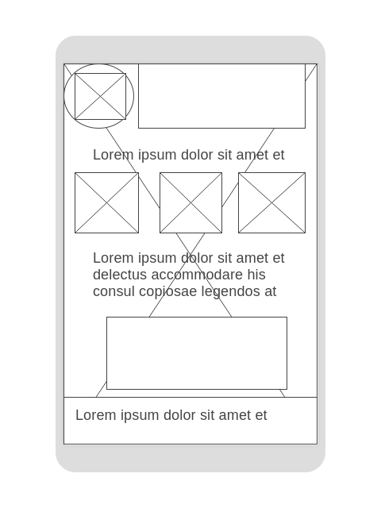
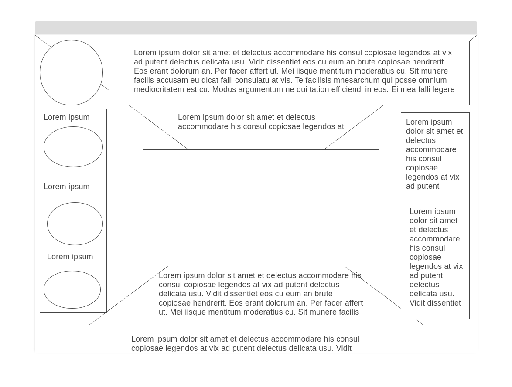

Welcome to the Owerri Chamber of Commerce
Site Name
Owerri City Chamber of Commerce. This name represents the city where the chmaber operates.
Wireframe
 Purpose
The Owerri City Chamber of Commerce acts as a city-wide economic catalyst, talent expositor and community champion. We promote business through member services, economic and community development, and bringing attention to innovation happening within the community.
Color Schema
Heading: rgb(2, 79, 2)
Background Color: rgb(251, 247, 251)
Navigation Accent: rgb(140, 112, 140)
Typography
All writing: Roboto Serif
Scenarios
- Are there any businesses currently hiring?
- Where can I find startups to potentially invest in?
- Where can I get a directory and contact details of businesses in the area?